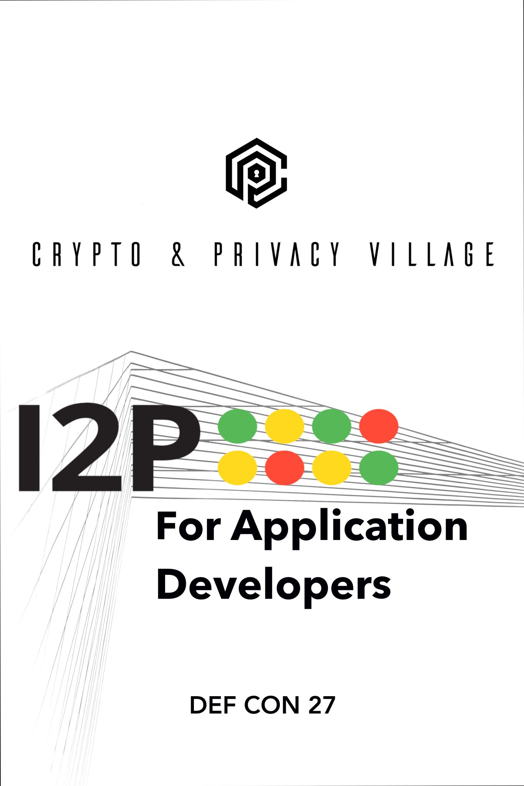

I2P Network
+ +
| |
| |
=---+---+-----------------=
| I2P Router |
=--+--------------------+-=
| |
=-+-----= =-+----------=
| I2CP | | I2PControl |
=-+---+-= =------------=
| |
=-+---|-------=
| |Str|eaming |
=-|---+-------=
| |
| =-+------= =-------------------=
| | SAM v3 +----+ SAM APPLICATIONS |
| =--------= =-------------------=
|
=-+-----= =-------------------=
| BOB +------+ BOB APPLICATIONS |
=-------= =-------------------=A sketch of the I2P API's, their relationship to eachother, and their relationship to the router.
I2CP is the core I2P API, it underlies many of the other I2P API's. It is also the most complex to use outside of Java, but recently several libraries have emerged that provide partial or full I2CP functionality from other languages. C, Java, and Javascript libraries are available, as is one Go library with partial support.
BOB is a less complicated to use API, but it is currently unmaintained. We don't plan on dropping it soon, but we also have not been adding the new features that are available in SAM Version 3. Many of the best ideas from the BOB API have been ported to the more modern SAMv3 API. Our advice is that new applications should not be using BOB, and that the applications using BOB(Both of them) should consider migrating to SAM.
Deprecated and for all intents and purposes removed.
I2PControl is a little different. Rather than setting up connections between I2P applications, it's used for configuring and retrieving information about the router programmatically.
The current recommended API for applications of all types to communicate via I2P is the SAMv3 API. It provides a convenient way to set up, communicate through, and tear down I2P connections. It is designed so that it can implement the API familiar to your programming language in a simple and straightforward way. For example, we can implement a Socket in Java or a net.Conn in Go.
SAM will by and large be the focus of this workshop.
If you need to make connections between applications automatically, then you need the SAMv3 API.
If you need to monitor or adjust the I2P router's connection, bandwidth usage, or change it's status, then you need the I2PControl API.
If you need to simply check the presence of an I2P router before making connections, one way is to make a quick connection to the I2CP API. If you're writing a Java application, the I2CP API may also be a good choice. Besides that, unless you know why you need to use I2CP, you probably just need SAM.
I2Ptunnel is good at forwarding existing services to I2P, and it can concievably be used for many applications. It does provide a SOCKS proxy after all. However, setting up i2ptunnels is an involved process, with lots of settings that are intimidating to your users. Using SAM, you set up the connections and apply all the options inside the application itself, giving you the all-important oppourtunity to set up sane defaults on behalf of your users.
A good example can be found in applications that are federated with Activitypub. While I2Ptunnel is perfectly capable of making AP applications available over I2P, not many new users will correctly configure the AP-based service correctly on their first try. The process of setting up connections, deciding whether or not to "Bridge" clearnet connections or remain strictly anonymous, deciding tunnel length and the number of tunnels in your destination "Pool," and most other I2P connection-related functions.
SAM is a simple API for controlling connections on the I2P i2p router in a way which is familiar to people who write internet applications. To use it, you simply set up a SAM connection and then use it like a streaming connection or to send datagrams, either with or without a repliable address. You can use these connections just like their TCP/IP equivalents for basically every intent or purpose.
Because of the deliberate similarity to existing streaming and datagram communications, every language makes it possible to reduce this process to one or two steps at sensible layers of abstraction. Starting from the most similar, like a Socket in Java, a connection in Javascript, or a net.Conn in Go. The actual thing will vary from language to language, but when creating a library, you should probably start soon.
Once you've done that, you've laid the foundation to alter the other network parts of your language. In many cases, it may be possible to forward a connection using the code you've already written, or to replace an underlying structure with your SAM-enabled version.
In a surprisingly short amount of time, you too can develop extensive tooling that makes building new I2P applications and, more importantly, adapting your existing applications to use I2P simple, reliable, and familiar.
Or you can literally just write your own i2ptunnel that you can embed in your existing application. I did that once. It works really well. I don't think we need a gazillion 'socat for I2P' out there but some would argue we didn't need a third so who am I to judge.
TODO
Sometimes, the details of setting up your SAM application require you to know whether an I2P router is present and ready to accept SAM connections or not. As of release 0.9.42 in a few weeks, this becomes a very easy problem to solve. Let's take a slightly complicated case as an example, a non-JVM, non-plugin application for Windows.
Since there's a good chance your SAM Application is in a non-Java, non-JVM language, it may be difficult or impossible to build as a plugin for the I2P router. If that's the case, then we can't assume a router is there.
Since this is a Windows machine, we can't assume that a package manager is available with a viable I2P router to install. If that's the case, we'll have to install our own.
One common way of creating a Windows installer for an application is to use Nullsoft Scriptable Install System. NSIS has the ability to do two essential things. First, it can check for the existence of the file, and second, it can start a new Windows application, and that application can be the I2P installer package.
Section "GetI2P"
SetOutPath $INSTDIR
IfFileExists "$PROGRAMFILES\i2p\i2p.exe" endGetI2P beginGetI2P
Goto endGetI2P
beginGetI2P:
MessageBox MB_YESNO "Your system does not appear to have i2p installed.$\n$\nDo you wish to install it now?"
File "i2pinstaller.exe"
ExecWait "$INSTDIR\i2pinstaller.exe"
SetOutPath "$PROGRAMFILES\i2p"
File "clients.config"
SetOutPath "C:\\ProgramData\i2p"
File "clients.config"
SetOutPath "$AppData\I2P"
File "clients.config"
endGetI2P:
SectionEndAs you can see, after the i2pinstaller.exe is done running, a clients.config file is copied to the I2P application data directory. We can ONLY do it in this case because we already determines that I2P was not installed.
Well here's how I once did it in a Makefile:
# geti2p is an alias for i2pinstaller.exe
geti2p: i2pinstaller.exe
# This downloads the I2P installer using the url composed by the 'make url'
# target.
i2pinstaller.exe: url
wget -c `cat geti2p.url` -O i2pinstaller.exe
# This fetches an RDF listing of I2P versions from launchpad and looks for
# the most recent stable version. Using this information, it then constructs
# a URL to download the Windows I2P router installer from Launchpad.
url:
echo -n 'https://launchpad.net' | tee .geti2p.url
curl -s https://launchpad.net/i2p/trunk/+rdf | \
grep specifiedAt | \
head -n 3 | \
tail -n 1 | \
sed 's| <lp:specifiedAt rdf:resource="||g' | \
sed 's|+rdf"/>||g' | tee -a .geti2p.url
echo -n '+download/i2pinstall_' | tee -a .geti2p.url
curl -s https://launchpad.net/i2p/trunk/+rdf | \
grep specifiedAt | \
head -n 3 | \
tail -n 1 | \
sed 's| <lp:specifiedAt rdf:resource="/i2p/trunk/||g' | \
sed 's|/+rdf"/>||g' | tee -a .geti2p.url
echo '_windows.exe' | tee -a .geti2p.url
cat .geti2p.url | tr -d '\n' | tee geti2p.url
rm -f .geti2p.urlEnter Jlink, i2pd TODO
Use clients.config.d TODO
Outproxy is a concept primarily known to i2ptunnel, and with i2ptunnel, primarily known to the HTTP and SOCKS proxies. SAM doesn't consider outproxying at all on it's own. If you are using SAM and want to access the clear net, you may wish to use an additional anonymizer when handling clearnet traffic, or offer a "Bridged" mode which is not anonymous but which is useful for bringing content to anonymous users
That said, since SAM connections can be used like their non-anonymous counterparts, it is actually very simple to use SAM to build an out-proxy. While this technique hasn't been used yet, and it would require careful considerations for the anonymity of the applications, there are cases where a SAM-based outproxy would be useful to incorporate into an application. One such application would be a peer-to-peer CDN which bridges I2P and clearnet content.